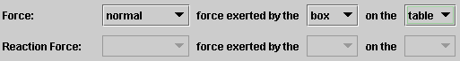
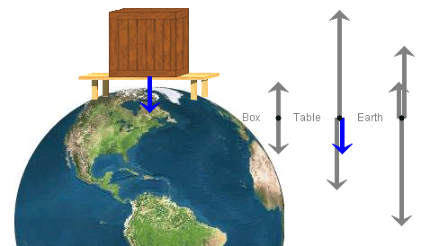
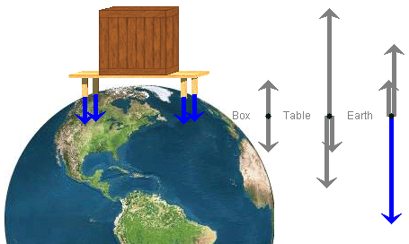
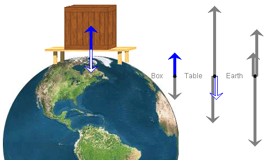

Instructions
This page is designed to get you started using the applet. The applet should be open. The step-by-step instructions on this page are to be done in the applet. You may need to toggle back and forth between instructions and applet if your screen space is limited.
Exercise 1. RESET  the applet. The applet should be in the Force mode.
the applet. The applet should be in the Force mode.
From the three Force drop-down menus, select the words "normal", "box", and "table" as illustrated in Figure 1 below. Then SUBMIT your selection.

Figure 1
You have selected the normal force exerted by the box on the table. The applet responds by selecting the corresponding vector in the free-body diagram for the table and by adding the vector to the image of the box-table-earth system with the tail end of the vector at the point where the force is acting. See Figure 2 below.

Figure 2
The applet renders all normal force vectors in blue. The example in Figure 2 illustrates this.
Exercise 2. Choose another force by selecting another vector in one of the three free-body diagrams. To select the vector, click on it. The selected vector is shown in solid black.
Try to think of the verbal description of the force you have selected and where in the image of the box-table-earth system the force vector should be drawn.
SUBMIT your selection. The applet responds by indicating the verbal description of the force via the Force drop-down menus, rendering the force vector in the free-body diagram in the appropriate color (see Help, Point 5, Free-Body Diagrams), and drawing the vector in the image of the system. Does the applet's response agree with what you had anticipated?
Exercise 3. Select a force from the Force drop-down menus by entering the combination "(normal, table, table)", and SUBMIT.
The applet responds with the message "Not a force" in the Comment text field. The table cannot exert a force on itself.
Replace the third entry in "(normal, table, table)" by "earth" so that you have the combination "(normal, table, earth)", and SUBMIT.
This time the applet responds by selecting the corresponding vector in the free-body diagram for the earth and drawing four force vectors with their tail ends on the surface of the earth at the points where the four legs of the table are standing on the earth. See Figure 3 below.

Figure 3
The one selected vector in the free-body diagram for the earth represents the total normal force exerted by the table on the earth which is the sum of the four normal forces exerted by the four legs of the table on the earth.
Exercise 4. Select a force from the Force drop-down menus by entering the combination "(gravitational, earth, box)", and SUBMIT.
The applet responds by selecting the corresponding force vector in the free-body diagram for the box and drawing the vector with its tail end at the center of the box in the image of the box-table-earth system. The center of gravity of the box is at the center of the box if the masses inside the box are uniformly distributed. The gravitational force exerted by the earth on the box acts effectively at the center of gravity of the box.
Both the gravitational force vector in the free-body diagram for the box and in the image of the box-table-earth system are shown in green, which is the color used by the applet to indicate gravitational forces.
Exercise 5. Change the combination "(gravitational, earth, box)" to "(gravitational, table, box)", and SUBMIT.
This time the applet responds in the Comment text field with "Negligible". The gravitational force exerted by the table on the box is negligible and not included in the free-body diagram for the box.
Change the word "gravitational" to "normal", and SUBMIT again. Does the applet respond in the manner you anticipate?

The applet provides two methods for selecting a force:
In the following text, the two methods will be referred to as Method A and Method B.
Exercise 1. RESET the applet, and select the Force Review mode by clicking the corresponding radio button, as illustrated in Figure 4 below.
Figure 4
The applet responds by selecting a force, by either Method A or Method B.
Select the same force using the other Method. Thus, if the applet has used Method A, you use Method B, and vice versa. SUBMIT your response.
If the applet responds with anything other than "Correct" in the Answer Quality text field, change your response and SUBMIT the new response.
Exercise 2. If, at the end of Exercise 1, the applet responds with "Correct" in the Comment text field, press NEXT to have the applet select another force. Again, use the "other" Method to select the same force as that selected by the applet, and SUBMIT.
Exercise 1. RESET the applet. Select the Reaction Force mode by clicking the appropriate radio button.
Using the three Force drop-down menus, select the gravitational force exerted by the earth on the box. SUBMIT your selection.
The applet responds by selecting the corresponding vector in the free-body diagram for the box and adding the force vector to the image of the box-table-earth system. In addition, the applet indicates, by both Methods A and B, what the corresponding Newton's-third-law reaction force is. It also adds this force to the image of the system. (Methods A and B are defined in the preceding section, "Force Review Mode".)
Does the applet's response confirm what you anticipated?
Exercise 2. Select the normal force exerted by the table on the box by selecting this vector in the free-body diagram for the box. Then SUBMIT your selection.
The applet responds by supplying the verbal description of the force, characterized by the triplet "(normal, table, box)", and adding the force vector to the image of the system. See the blue arrows in Figure 5 below. They represent the normal force exerted by the table on the box.

Figure 5
As in Exercise 1, the applet also indicates, by both Methods A and B, the corresponding Newton's-third-law reaction force. It also adds this reaction force to the image of the system. Figure 5 shows the reaction force in the free-body diagram for the table and in the image of the box-table-earth system. The arrows representing the reaction force are in "inverted blue".
If the applet shows a triplet other than "(normal, table, box)" in the Force drop-down menus, you have selected the wrong vector from the free-body diagrams and you should try again.
Exercise 1. RESET the applet, and select the Reaction Force Review Mode.
The applet responds by selecting a force by both Methods A and B and by drawing the force vector in the image of the box-table-earth system. (Methods A and B are defined in the earlier section "Force Review" or in Help.)
Use either Method A or B to select the corresponding Newton's-third-law reaction force, and SUBMIT your selection.
If you used Method B and the applet responds with the message "Incorrect" or "Not a force" or "Negligible" in the Comment text field, correct your response and SUBMIT again.
If the applet responds "Correct", the applet also selects the reaction force by the "other" Method and adds the reaction force vector to the image of the box-table-earth system.
After "Correct", press the NEXT button to continue with another force.
Exercise 2. Continuing from Exercise 1, click NEXT. Then, instead of selecting a reaction force, click GIVE UP. The applet supplies the correct response for you.
Click NEXT once more, but this time select the reaction force yourself.